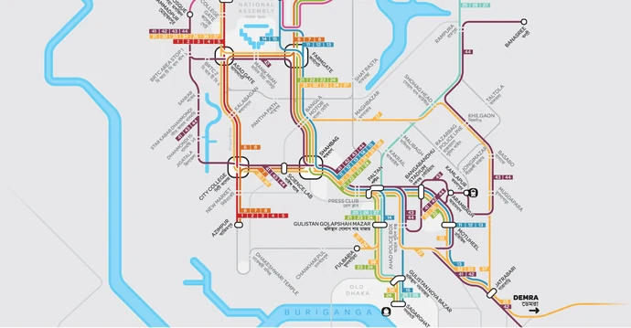
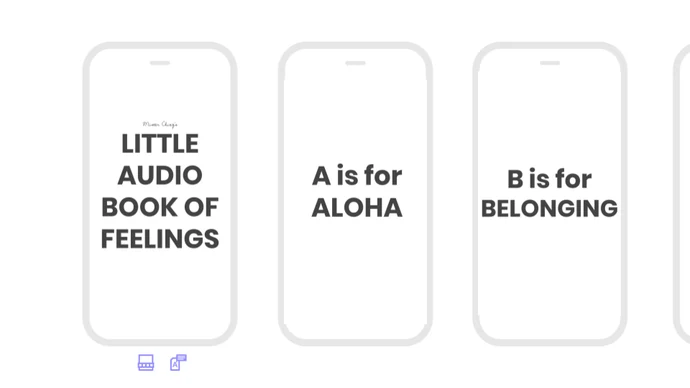
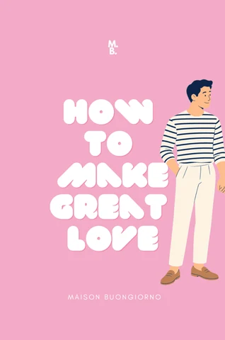

Consultant
Parthenon
Learn to frame the question.
I started in consulting at Parthenon, where I learned to break down an unfamiliar business problem and explain what mattered.
Career history on LinkedInSan Francisco
I build things that help people feel more connected to places, products, and one another.
That’s taken me from mapping buses in Dhaka to helping people build their first apps to making perfume in San Francisco. I like the work that takes an idea all the way to the people who will use it.
Explore the journey
Six chapters, each with a different way of getting an idea into the world.
I started in consulting at Parthenon, where I learned to break down an unfamiliar business problem and explain what mattered.
Career history on LinkedInSenior Financial Analyst → Finance Manager
I helped establish Google’s finance function in Asia Pacific and worked on early Google Maps decisions, including how to acquire road data and imagery.
Explore Google MapsAt MIT, I studied how people get around cities. In Dhaka, I worked with Urban Launchpad and local collaborators to map bus routes so riders could make sense of the network.
Read the story behind the map
Dhaka’s first bus map Open the original printed map (PDF).First product hire → Head of Operations → COO
At Thunkable, I helped people build mobile apps without writing code. I built apps of my own that the community remixed 120,000 times. The best part was seeing what first-time developers made once they had the tools.
See what our community built · Visit Thunkable
Feelings, an audiobook app A screenshot and the original Thunkable community post.Station A · First product hire → Product Lead → Director of Strategy and Operations
At Google Shopping, that meant helping advertisers move to a new platform. At Station A, it meant building a marketplace that made it easier for businesses to evaluate and buy clean energy.
Explore Station AI co-founded New Market Goods to make the story behind clothing made in Bangladesh more visible. Today at Maison Buongiorno I make the perfumes, tell their stories, and meet customers at pop-ups. I get to see what makes someone curious enough to stop, try a scent, and make it their own.
See New Market Goods · Visit the parfumerie
How to Make Great Love Read the first chapter of my illustrated book.A San Francisco neighborhood parfumerie. Start with the scent stories, short films, or little books.
Explore Maison · Read from How to See GodMy journal on making things, doing work that matters, and the questions that stay with me.
Read the journal on Substack · Monsieur Buongiorno websiteHālau O Keikialiʻi keeps me connected to Hawaiian culture through hula and community.
Au P’tit Monde is part of our family’s San Francisco community and one reason I’ve been thinking more about how children learn and find a sense of belonging.
The next chapter
I’m curious about new products that need to find their first customers, collaborations with people who care about how things are made, and ways to bring more hands-on learning into schools. If you see a connection to something you’re building, I’d love to hear what you see.
If you’re starting something of your own, finding your way along a non-traditional path, or just sitting with one of life’s big questions, I’m happy to listen and help you think it through.
I write about some of those questions in Grandi Domande, my series of little books on love, work, faith, parenthood, and time. You can start with How to Make Great Love or How to See God, or follow The Journal of Monsieur Buongiorno on Substack.
Tell me what you’re working through